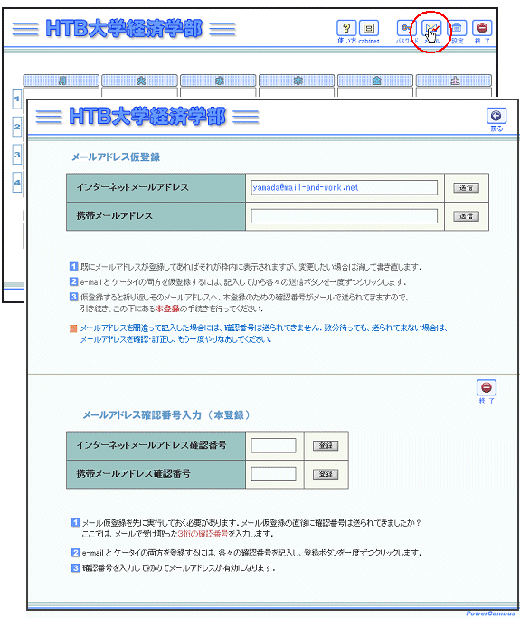
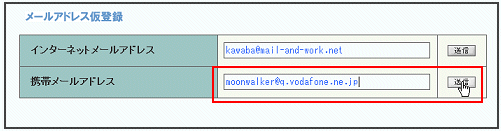
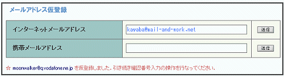
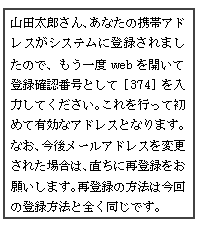
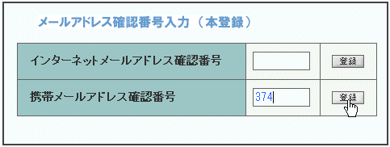
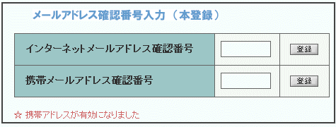

初めてのログイン
携帯メールを登録する
e-mailは大学のメールアドレスが，あらかじめ登録されているかもしれません．普段使うメールアドレスが大学のメールアドレス以外であればここで変更します．また，
携帯メールアドレス
は，質問の返信を携帯メールで受け取ったり，担当教師からの連絡を確実に受け取ったりするために必要です．必ず登録してください．
メールボタンをクリックしメール変更画面を開く
間違ったアドレスが登録されないように
工夫された登録画面です．
上段はアドレスの登録を行いますが，下段ではその確認ための処理を行います．

携帯メールアドレスを入力し をクリックする

受け付けられると，確認の表示がでます．そして，通常ならば，数分以内に
携帯に確認のためのメールが届きます
．


※携帯へ送信されるメール画面です．e-mailの場合も少し書式が違いますが同様の内容です．
携帯メールの確認番号を入力し をクリックする
メールに書いてあった確認番号を，下段の番号入力欄に記入します．
をクリックすると，本登録となります．

登録完了のメッセージが開きます．


 携帯メールを登録する
携帯メールを登録する